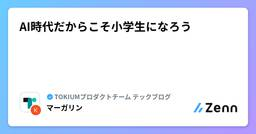
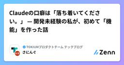

TOKIUMプロダクトチーム テックブログのフィード
https://zenn.dev/p/tokium_dev
『未来へつながる時を生む』 株式会社TOKIUMの技術ブログです🕰
フィード

立ち止まるきっかけは自分で作る──鵜呑み防止スキル discernment-nudge を使ってみた
TOKIUMプロダクトチーム テックブログのフィード
はじめにはじめまして、株式会社TOKIUMの齋藤です。今年新卒で入社した、配属2ヶ月弱の駆け出しエンジニアです。日々の開発では Claude Code をフルに使っています。特に迷うのは、実装方針の提案と工数の見積もりです。自信満々な文体で、きれいに構造化された回答が返ってくる。根拠を問い詰めることもありますが、正直、多くはそのまま信じて進めてきました。毎回は疑いきれないからです。ただ、信じた前提が外れていれば、そこから先に進めた時間はそのまま手戻りになる。それが怖い。実際、自信のある断定の文体は、裏を取ったことを保証してくれません。追及して初めて「推測でした」と返ってくることも...
7時間前

自分の嗜好を集めたら何が見える？「読む・聴く・観る」のマルチメディア蒐集基盤
TOKIUMプロダクトチーム テックブログのフィード
ただ音楽を聴いていた日常のデータに、Spotifyの「Wrapped」は「振り返る面白さ」を与えてくれました。特別な記録をしなくてもいつの間にかログが溜まり、自分だけの1年が見えてくる体験です。あの手軽さのまま、音楽だけでなく「本の抜き書き」も「Podcast」も「紙面のスナップ」も、日常のあらゆるインプットがまとめて振り返れたらどうだろう。——そんな好奇心で作ったのが「Scraps」です。名前は文字通り「スクラップ」。Web記事も、Podcastも、紙の本の一節も、思ったときにiPhoneからポイポイ投げておくだけ。AIのサマリと共に「ひとつながりのログ」になって手元に溜まってい...
1日前

創作の主体は、人間だった。 - 初音ミクのお誕生日なので TextAlive App API を使ってみた - 1
1
TOKIUMプロダクトチーム テックブログのフィード
はじめに：エンジニアになった経緯はじめまして！株式会社TOKIUMでエンジニアをしている、えしらと申します。この春入社し、未経験からエンジニアになりました。人生初めてのテックブログは、小学生の頃からずっと好きな初音ミク[1]をテーマに書いてみることにしました。特に初音ミクの創作文化とライブが好きで、絵を描いたり、グッズを自作したり、DJしたり、ライブを見るために津々浦々を旅したり、いろいろなことをして生きています。毎年夏に開催されるマジカルミライ[2]には、高一で初めて参加した「マジカルミライ2019」で心をつかまれてから、ずっと通っています。マジカルミライでは、毎年プロ...
2日前
肥大化し続けるCLAUDE.md 5
TOKIUMプロダクトチーム テックブログのフィード
はじめにTOKIUM でエンジニアをしているちっちです。26卒として入社し、現在は2ヶ月の研修を経て開発に取り組んでいます。突然ですが、今お使いのCLAUDE.mdは何行ありますか？以前、中身を整理した方も気づくと膨れ上がっていませんか？かくいう自分も研修を終えて数週間後、ふとCLAUDE.mdを開いてみると378行ありました。しかも、そこに書いてあることを自分でも半分くらい覚えていません。書き足すたびに便利にしているつもりが、実際にやっていたのは自分でも把握できていないものを Claude に毎回読ませることでした。 整理しても、静かに崩れていく公式ドキュメントには...
5日前

AI時代だからこそ小学生になろう
TOKIUMプロダクトチーム テックブログのフィード
どうも、TOKIUMで新卒エンジニアとして働いているマーガリンです。この記事では、新卒エンジニアとして働く中で、日々感じていることを書いてみます。おそらく経験のあるエンジニアの方ならできていることだと思います。あくまで一人の新卒エンジニアとしての個人的な所感なので、「そういう考え方もあるんだな」くらいの気持ちで読んでもらえれば幸いです。 「昨日実装した内容、どう動いてるか説明できますか？」いきなりですが、昨日実装した内容について、こんな質問をされたらどうでしょうか。「その実装、どう動いているんですか？」みなさんは、自信を持って答えられるでしょうか。僕自身、正直、自信...
6日前

Claudeの口癖は「落ち着いてください。」 — 開発未経験の私が、初めて「機能」を作った話
TOKIUMプロダクトチーム テックブログのフィード
はじめに：Claudeの口癖は「落ち着いてください。」こんにちは、TOKIUMの中谷です。今年の4月に、開発完全未経験のまま新卒で入社しました。2ヶ月の開発研修を経て、いまはチームに配属されて1ヶ月の新人エンジニアです。研修のチーム開発は、思いきり試して、思いきり失敗できる場所でした。Claude Code（以下 Claude）をフル稼働させてどんどんPRを出し、バグが出たら直して、また学ぶ。壊しても困らない環境だったからこそ、慎重という言葉とは無縁でした。それが配属された途端、一変しました。その先に本物のお客様がいるプロダクトのコードを触るとなると、ものすごく軽微なバグ修正の...
7日前

新卒エンジニア、Slack Botをつくり、運用を知り、自ら改善を回せるようになった の巻
TOKIUMプロダクトチーム テックブログのフィード
はじめにTOKIUMに新卒エンジニアとして入社した「なる」です。7月からオペレーションシステム開発部に配属されました。私のチームでは、お客様に代わって請求書などの書類を取得し、アップロードするまでのシステムを開発しています。5月に開発研修が始まり、2ヶ月間で個人開発とチーム開発を経験しました。それでもまだまだ知識も技術も追いつかず、配属された今もキャッチアップに必死な毎日です。そんな私が本配属後に最初に取り組んだのは、自分から提案して開発したSlack botでした。本記事では、開発を始めたばかりの視点から、そのbotをどう提案し、どのように改善して育ててきたのかをまとめていき...
8日前
あなたのHTML資料には、魂が込められていますか？
TOKIUMプロダクトチーム テックブログのフィード
!この記事は何の話か（3行まとめ）膨大なインプットに溺れる新卒未経験エンジニアの私血迷ってダサいデザインのHTMLを生成させることにした流し読みできず一言一句読むようになり、思いの外、インプットが進んだ人に読んでもらうには、どんな形であれ資料に魂を込める必要がある。こんにちは。株式会社TOKIUM 26卒未経験エンジニアのタケノコご飯です。今回は、配属後に自分用のインプット資料を作っていて直面した困難と、乗り越え方、そして学んだことを記事にしてみました。新卒エンジニア、未経験の方はもちろん、資料作りをするすべての方に読んでいただきたいです🌷※本人は至って真面目です...
9日前
配属直後、外付けの脳を作った話。Claude Code と作った個人ナレッジベースの中身
TOKIUMプロダクトチーム テックブログのフィード
はじめにどうも、TOKIUMで今年からエンジニアデビューした とりのひと です。配属から1ヶ月、まだまだ開発素人です。今回の記事では、そんな私が配属された直後に作成した個人ナレッジベースについて話していきます。まず、配属直後にいちばん困ったのは、覚えることが多すぎて、頭に入れるのが追いつかないことでした。コードの層責務、ドメインの用語、金額計算のルール、業務エンティティの状態遷移、認証まわりの分岐、レビュー観点、命名規約……。全部を頭にため込もうとしても、翌週にはどこに何があったか記憶が薄れているし、記憶が薄れていることに気づかないまま実装を進めると詰まってしまいます。それ...
12日前
Claude Codeの回答を"行動指向"にするOutput Styleは効果があるのか検証してみた
TOKIUMプロダクトチーム テックブログのフィード
1. はじめにこんにちは、TOKIUMの小松です。今年の4月に入社して未経験でエンジニアになった駆け出しエンジニアです。駆け出しということもあり、Claude Code で知らない技術をキャッチアップすることも多いです。AIに質問すれば、丁寧な解説は返ってくる。返ってくるのですが、長い。読み終えても「で、結局まず何をすればいいんだ？」がわからず聞き直す、というような作業が発生していました。答えは受け取っているのに、行動に移せない。非常にもどかしいですね。この「長さ」を、モデルを変えずに調整できないか。調べると、Claude Code には Output Styles という公...
13日前
そのグリーンは信じていいのか — 正しさを仕組みにして、その仕組みも疑う
TOKIUMプロダクトチーム テックブログのフィード
はじめにこんにちは！TOKIUMでQAチームのリーダーをしている西田です。4月に「QAチームのナレッジを『ハーネス』にする」という記事で、テスト設計の自動化を書きました。仕様書やソースコードから、テスト観点とテストケースを一気通貫で生成するパイプラインの話です。https://zenn.dev/tokium_dev/articles/705334e2f6ac10あの記事の結びに、宿題をいくつか残していました。中でも大きかった宿題は2つ。「実行結果のフィードバックループ」と「E2Eテスト自動化との接続」です。この4ヶ月は、主にこの2つに取り組んでいました。テスト実行の...
14日前
引き継ぎ資料では「判断」が渡らない──育休に入るPdM管理職がClaude Codeに残したもの
TOKIUMプロダクトチーム テックブログのフィード
9月の中頃から、育休に入ります。私はTOKIUMで、PdMを経て、いまは複数のプロダクトを束ねる部門の管理職をしています。しばらく会社からいなくなるので、この夏はずっと引き継ぎをしています。最初にやったのは、ごく普通の引き継ぎでした。部の議事録430件をチーム別に整理してzipで渡し、人員マップや体制の資料を添える。zipは渡した瞬間から古くなるので、以降の新着は隔日の定例でチェックボックスにまとめて口頭で伝える。過去はスナップショットで一括、直近は差分で小刻みに。情報の引き継ぎは、これでだいたい機能します。ただ、zipを作りながら、嫌な予感がしていました。これで渡るのは「情報」だ...
15日前
タスク選定が9割！？要件定義がメインになった、運営目線のAI時代1Weekインターン
TOKIUMプロダクトチーム テックブログのフィード
こんにちは、TOKIUMでエンジニアをしているFatherScorpionです。TOKIUMでは今年の夏から、開発チームに混ざって実際のプロダクト開発に挑戦してもらう実務型のサマーインターンが始まりました！期間は5日間。テーマは「AIを使い倒す」で、学生にはClaude Codeを支給します。🤔 「うちでもチームに混ざる形のインターン、やらないのかな〜」とは以前から考えていましたが、今回は自分が所属するTOKIUM経費精算の開発チームでインターン生の受け入れを行うということで、メンター側としてとても楽しみにしていました！実務型インターンはTOKIUMとして初の試みで、楽しみでは...
16日前
AI怪談小話三夜 — これであなたはいりませんね
TOKIUMプロダクトチーム テックブログのフィード
はじめにこんにちは、TOKIUMでPdMをしている冨永です。夏ですね、すっかり暑くなり、日中は数分でも外に出ていると汗びっしょりになるようになりました。夏といえばなんでしょう？スイカ？海？祭り？花火？いえ、怪談ですね。というわけで、AIを使っていて肝が冷えた話でもしようかな、と思います。業務の箸休めにでも読んでみてください。※ちなみにAIが勝手にPushした話・データを削除した話は書きません。AI使った怖い話の定番？だし肝どころか心が痛くなるので。 第一夜 — 完璧な報告書ある日、Claude Codeにログの抽出・集計を頼んでいました。条件に合うレコードを引いて...
19日前
Claude Codeと共に、初学者の壁を乗り越える
TOKIUMプロダクトチーム テックブログのフィード
みなさんこんにちは！株式会社TOKIUMでエンジニアをしている26卒の松本です。早いもので、チーム本配属から1ヶ月が経ちました。実務の荒波に揉まれたこの1ヶ月間で、たくさんの壁に出会いました。そしてその度に自分なりの方法で壁を乗り越えようともがいたので、その軌跡を書いてみました！ ① コードが読めず目が滑る、の壁私が実務に配属されて、はじめにぶち当たった壁は、コードと睨めっこしても「目が滑ってしまう」現象です。いろいろ言葉を考えたのですが実体験からも「目が滑る」という表現がしっくりきます。「目が滑る」現象を分解すると、読むための前提知識が足りなさすぎるということが大きな原因の...
20日前
terraform applyしても消えないRDSパラメータ差分とapply_method
TOKIUMプロダクトチーム テックブログのフィード
Auroraのcluster parameter groupで、terraform applyが成功した直後のterraform planに同じ差分が戻ってくることがありました。AWSが返すApplyMethodとTerraform providerの既定値が食い違っていたことが原因でした。この差分は実効値を変えないため、放置しても障害にはつながりません。それでも直したのは、planのたびにノイズが出続けるとNo changesを確認のゲートにできず、本物の差分が埋もれるためです。本記事の実測は次の環境で行いました（確認日: 2026-08-10）。Terraform v1....
21日前
CLI 上の Claude Code で Computer Use を再現する（追加課金ゼロ、441 行のエージェント）
TOKIUMプロダクトチーム テックブログのフィード
!この記事は何の話か（3 行まとめ）Computer Use（AI がスクリーンを見てマウス・キーボードを操作する）を試したいけれど、API の従量課金は使いたくない。その制約のもとで Windows 11 のネイティブ GUI を自律操作するエージェントを自作しましたポイントは1つで、エージェントの「頭脳」を API を呼ぶコードではなく、いま開いている Claude Code の対話セッションそのものにすること。実装は API を一切呼ばないヘルパー CLI 2 本（合計441行）だけです追加課金は構造的にゼロで実機検証（メモ帳への入力）まで動作を確認しましたが、Bash...
23日前
新卒がClaude Codeを通じて上司の頭の中を覗いてみた
TOKIUMプロダクトチーム テックブログのフィード
こんにちは！株式会社TOKIUMでエンジニアをしているsomaです！私は部署に配属されて4ヶ月になります。正直に言うと、上司が何を考えて仕事をしているのか、まだよくわかりません。まあ、何年も一緒に働けば、だんだんわかるようになるのだろうと思っていました。ところが先日、それが30分で覗けてしまう出来事がありました。それは部署内で始まった「skills共有会」です。 「skills共有会」とは？「skills共有会」と聞くと、Claude CodeのSkillsを共有する会っぽいですよね。でも実際は、Skillsだけの会ではありません。そもそもClaude Code自体に対する...
1ヶ月前
タイムボクシングのすすめ
TOKIUMプロダクトチーム テックブログのフィード
株式会社TOKIUMでエンジニアをしているあのです。今年の3月から、開発チームのリーダーとして業務しています。私のチームは、会計ソフトへ連携するためのフォーマットをお客様ごとにカスタマイズしています。そのため他の開発チームに比べて、「この仕様は実装できるか」「今はどういう実装になっているか」といった相談や確認が、チームの外から入ってきやすい立ち位置にあります。リーダーになってからというもの、自分の1日の過ごし方が変わりました。自分で手を動かす時間よりも、レビュー、相談、確認の依頼がどんどん入ってきます。会議も増えました。気づくと一日が終わっていて、自分が進めるはずだった仕事は何も...
1ヶ月前
八ヶ岳の防災サバイバルキャンプで学んだ「備えの設計」——想定・優先順位・原理原則
TOKIUMプロダクトチーム テックブログのフィード
首都直下地震や南海トラフ地震が、遠くない将来やって来ると言われ続けています。みなさんは、災害への備えをしていますか？私は、まあまあ備えができているつもりでいました。防災バッグは家にあるし、水も何本かある。でも 「そのバッグの中身、全部使えますか？」 と聞かれたら、答えに詰まります。そもそも中身を最後に確かめたのがいつだったかも、思い出せませんでした。「命の72時間」という言葉をご存知でしょうか。発災から72時間を過ぎると、救出される人の生存率が急激に下がる。だから大きな地震のあとの数日間、救助と支援は、生き埋めや重傷など命の危険がある人に集中します。自力で行動できる人への救援は、後回...
1ヶ月前